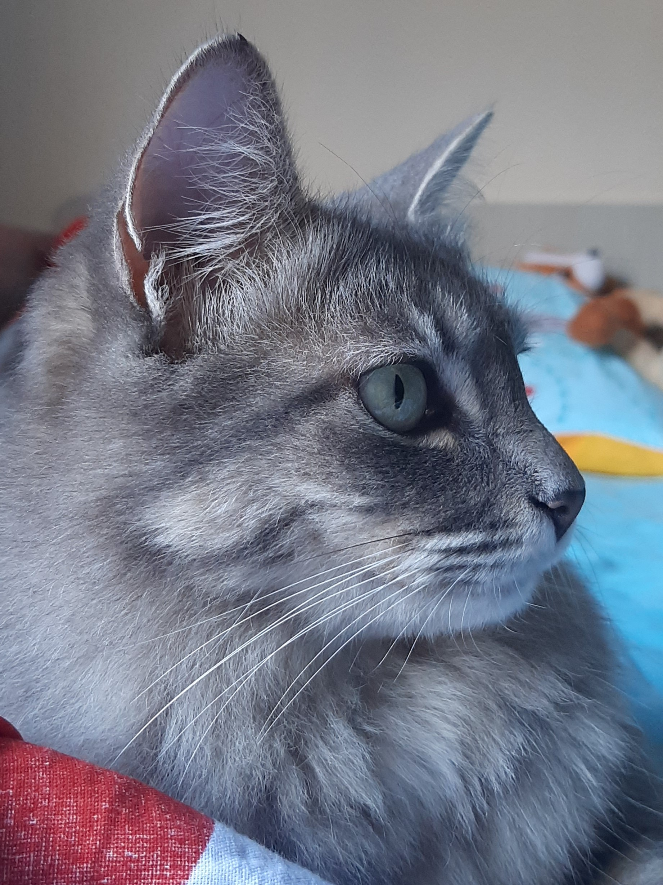
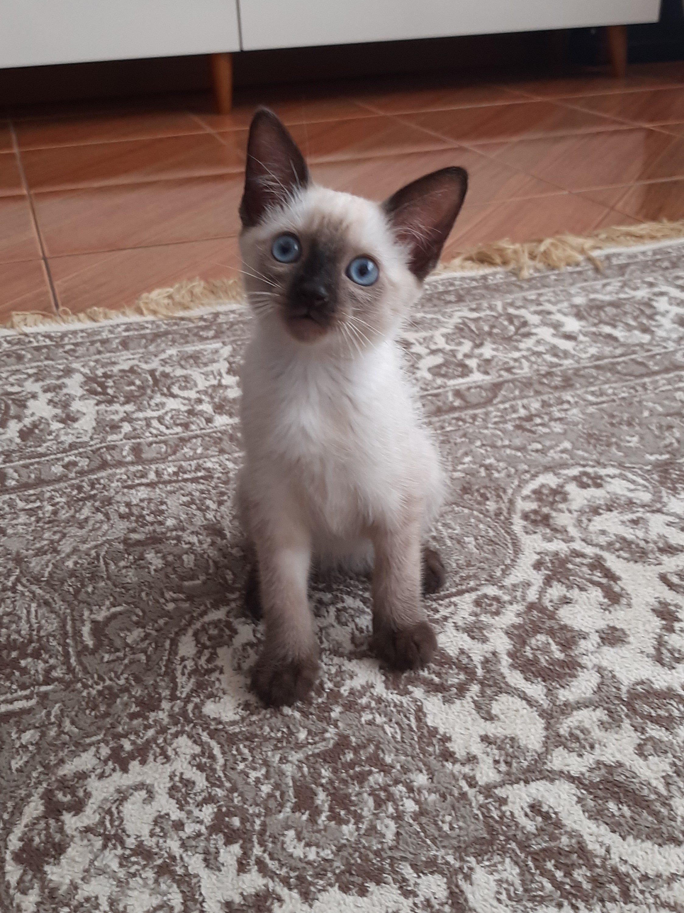

Gatas
Nina:
Extremamente mau humorada o tempo todo, alta probabilidade de te morder, não gosta de carinho (apenas no topo da cabeça e por tempo limite), vai te morder, aproxime-se com cautela.


Bia:
Muito dócil, extremamente carente, dorme muito (em colos quando tem a chance), gosta de carinho (e o demanda), levemente volátil, muito medrosa, aproxime-se devagar.
Mya:
Bem simples (ela é o template básico para um gato), gosta de carinho, bem sociável com outros gatos e com seres humanos, incrivelmente obediente, se assusta com facilidade (especialmente com espirros), aproxime-se.
Amora:
Bem carente, gosta de reclamar muito, tamanho pocket, solta uma quantia absurda de pelos, mole, tem medo de humanos desconhecidos, reclama MUITO, ela vai fugir ao se aproximar.
Gatucha:
Foi sequestrada de uma escola, moderadamente volátil, demanda carinho em horários peculiares (3:00), se esfrega em você enquanto deitado(a), não gosta de ser pega no colo, aproxime-se e analise-a.